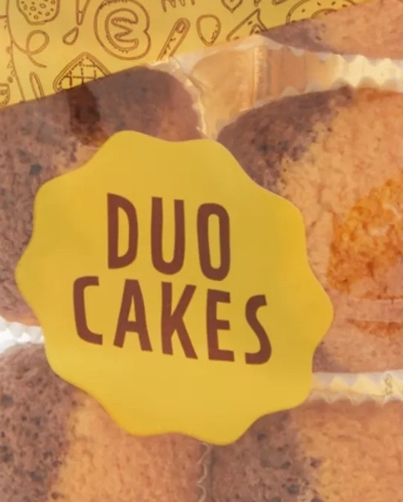
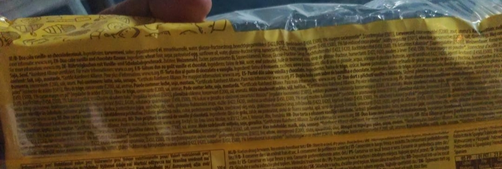
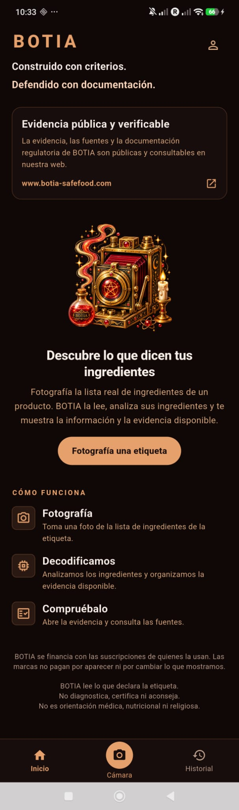
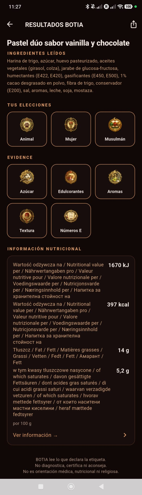

Narrative & positioning
The campaign has nine ordered scenes. The images and copy follow an established communication strategy.
02 / MARKETING PRODUCTION CASE STUDY
Creative Studio brings together campaign messages, original photography, product screens and BOTIA's robot, then prepares consistent marketing materials for multiple languages and channels.


Original campaign assets. Structured in a multilingual creative-production system.
THE CAMPAIGN / THE STORY
Choose a scene to see the marketing message and a composition assembled from original BOTIA assets. Then change language and format to see how Creative Studio organizes production.
CAMPAIGN / SCENE 00
Seven timed scenes: label, camera, analysis, results, layers and evidence. This simplified player uses the recorded scene order, not a finished MP4.
BEHIND THE CREATIVE
The marketing story is assembled from original product photography, real application captures, the BOTIA character, and documented copy and format configurations.


THE TECHNOLOGY BEHIND MARKETING
Creative Studio uses reusable HTML components, localized JSON copy, format presets and validation to turn an approved campaign narrative into a collection of consistent marketing outputs.
The campaign has nine ordered scenes. The images and copy follow an established communication strategy.
The original photos, app references, mascot and factual texts stay linked to their sources.
One system handles fourteen languages, Arabic RTL and eight defined format presets.
The Studio supports static/animated previews, campaign navigation, an internal video sequence and optional PNG batch export.